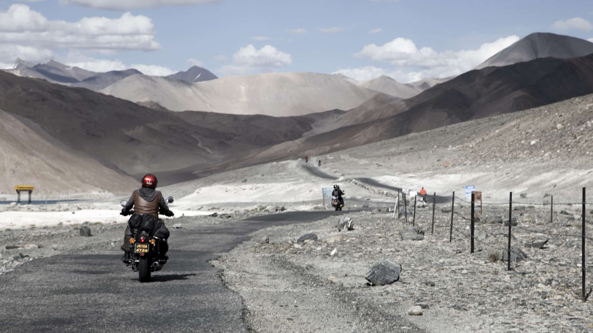

ABOUT US LADAKH  Set amidst the epic Himalayas, Ladakh is a rustic and heavenly beautiful travel destination. The rugged valleys and mountains, winding roads coupled with the vibrant cultural life maintain the exuberance and charm of this region. The iconic Magnetic Hill, the turquoise coloured Pangong Lake, the confluence of two mystical rivers, ancient and awe inspiring monasteries and the highest passes are a few of the marvelous attractions of Leh and Ladakh in general. The wide array of trekking routes will satiate your soul and enrich the senses. The moon like desert mountains continue to be an exceptional destination for adventure seekers and admirers of Buddhism and phenomenal mountain vistas. So, pack some travel essentials with you to explore the most enthralling destination of India and bring back souvenirs of endless memories with you.